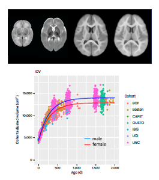

"To learn and to apply, for the benefit of mankind"
Anqi Qiu Lab@PolyU
-
Latest News:
- 12/2023: Prof. Qiu gives a talk at the International Symposium on Biomedical and Health Engineering.
- 12/2023: Prof. Qiu gives a keynote at IEEE EMBS Data Science Conference.
- 12/2023: Jing’s paper is out in Medical Image Analysis.
- 11/2023: Prof. Qiu and the team won the National Science and Technology Major Project grant (科技部重大项目) on brain development in early life.
- 11/2023: Our paper is published in Nature Neuroscience.
- 
In a ground-breaking scientific endeavor, Professor Qiu, who heads a neuroimaging birth cohort in Asia, joined forces with seven global birth cohorts and utilized magnetic resonance imaging (MRI) to unlock mysteries surrounding early brain development. Their exploration, resulting in the formation of the global Organization for Imaging Genomics in Infancy (ORIGINs), encompassed data from over 2,000 children worldwide. This monumental study, a beacon of knowledge, forms a solid foundation for comprehending early brain development and guiding interventions to nurture the cognitive well-being of future generations.
- 11/2023: Jingwen’s paper on white matter functional organization is out in Cerebral Cortex.
- 7/2023: Guodong’s paper on Amyloid- is out in Neuroimage.
- 7/2023: Prof. Qiu gave a keynote at the annual event of Chinese Young Scholar for Human Brain Mapping, Montreal.
- 7/2023: Prof. Qiu gave a keynote at HUman partnership with Medical Artificial intelligence (HUMAN.AI) conference.
- 6/2023: Chenye’s paper on brain-metabolism relationship is out in Translational Psychiatry.
- 6/2023: Prof. Qiu gave a talk at Center for Imaging Science at the Johns Hopkins University to celebrate its 25th anniversary.
- 3/2023: Prof Qiu and chaoqiang published a paper on adolescent brain in Nature subjournal - Neuropsychopharmacology.
- 2/2023: Chaoqiang’s paper is out in Neural Networks.
-
Key Research Areas: